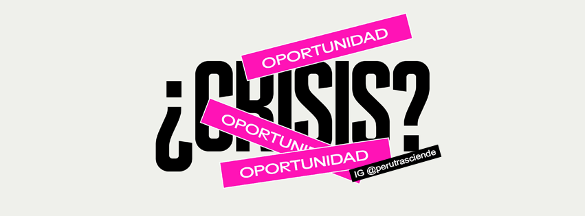

¡Bienvenido al equipo de Staff de Trasciende!



Somos el equipo que trabaja cada día para dejar una huella y ayudar a otros a trascender.
Somos el equipo que trabaja cada día para dejar una huella y ayudar a otros a trascender.

Encargados del diseño visual y estético.
Responsables de la programación y la funcionalidad.
Analizan datos y generan contenido relevante.
Organizan tareas y tiempos del equipo.
Compartimos con 120 estudiantes del Colegio San Agustín sobre vocación y propósito.
Asesoría en la creación del juego "¿Y ahora qué?" para apoyar la búsqueda vocacional.
Participamos en "Propósito en Altura", guiando a 80 estudiantes en su futuro profesional.
Un Staff es un equipo de personas comprometidas que se encarga de gestionar, desarrollar y mantener un proyecto en funcionamiento, asegurando el cumplimiento de los objetivos.
Organiza actividades, crea contenido, planifica estrategias y garantiza la coordinación eficiente de todas las áreas del proyecto.
Ser parte del Staff implica asumir roles clave, liderar iniciativas y tomar decisiones para impulsar el crecimiento del proyecto.
Permite contribuir activamente al desarrollo del proyecto, aportando ideas, apoyando al equipo y alcanzando objetivos comunes.
| # | Título | Tipo | Enlace |
|---|---|---|---|
| 1 | Podcast "Enamórate del Problema" | Audio | Enlace |
| 2 | Desmintiendo Mitos: ¿Profesión es igual que vocación? | Audiovisual | Enlace |
| 3 | Desmintiendo Mitos: ¿Las carreras tienen género? | Audiovisual | Enlace |
| 4 | Desmintiendo Mitos: ¿Las carreras te encasillan? | Audiovisual | Enlace |
| 5 | Desmintiendo Mitos: ¿Puedo emprender o ser autodidacta? | Audiovisual | Enlace |
| 6 | Desmintiendo Mitos: ¿Estudiar lo que el entorno me dice? | Audiovisual | Enlace |
| 7 | Historia con propósito: Jorge Reinauldo | Audiovisual | Enlace |
| 8 | Historia con propósito: Saida Meneses | Audiovisual | Enlace |
| 9 | Historia con propósito: Marco Vigil | Audiovisual | Enlace |
| 10 | Historia con propósito: Gianina Honorio | Audiovisual | Enlace |
| 11 | Historia con propósito: Andrea Lanata | Audiovisual | Enlace |
| 12 | Historia con propósito: Vanessa Quipo | Audiovisual | Enlace |
| 13 | Historia con propósito: Moises Piscoya | Audio | Enlace |
| 14 | Antiferia Vocacional Virtual: Webinars para PPF y Docentes | Audiovisual | Enlace |
| 15 | Antiferia Vocacional Virtual: Día 1 para estudiantes | Audiovisual | Enlace |
| 16 | Antiferia Vocacional Virtual: Día 2 para estudiantes | Audiovisual | Enlace |
| 17 | Antiferia Vocacional Virtual: Día 3 para estudiantes | Audiovisual | Enlace |
| 18 | Guía para el estudiante Trasciende - Edición 2021 | Audiovisual | Enlace |
| 19 | Guía para el docente Trasciende - Edición 2021 | Audiovisual | Enlace |
| 20 | Serie Web GPS Vocacional | Audiovisual | Enlace |
| 21 | Video sobre concepto Trasciende: Antiferia | Audiovisual | Enlace |
| 22 | Historia con propósito: Lorena Alvarez | Audiovisual | Enlace |
| 23 | Historia con propósito: Ricardo Pun | Audiovisual | Enlace |
| 24 | Historia con propósito: Vanía Masías | Audiovisual | Enlace |
| 25 | Historia con propósito: Augusto Townsend | Audio | Enlace |
| 26 | Historia con propósito: lvaro Henzler | Audiovisual | Enlace |
| 27 | Historia con propósito: Arlette Euler | Audiovisual | Enlace |
| 28 | Historia con propósito: Elizabeth Duarte | Audiovisual | Enlace |
| 29 | Historia con propósito: Flor Calderon | Audiovisual | Enlace |
| 30 | Historia con propósito: Carla Grados | Audiovisual | Enlace |
| 31 | Historia con propósito: Azucena Gutierrez | Audiovisual | Enlace |
| 32 | Historia con propósito: César Bustamante | Audiovisual | Enlace |
| 33 | Historia con propósito: Mariel Rentería | Audiovisual | Enlace |
| 34 | Historia con propósito: Mariela Quispe | Audiovisual | Enlace |
| 35 | Historia con propósito: Miguel Uccelli | Audiovisual | Enlace |
| 36 | Historia con propósito: Julio Garay | Audiovisual | Enlace |
| 37 | Historia con propósito: Juan Carlos Snack | Audio | Enlace |
| 38 | Historia con propósito: Jorge Yamamoto | Audiovisual | Enlace |
| 39 | Historia con propósito: Hugo opo | Audiovisual | Enlace |
| 40 | Historia con propósito: Gerson Ames | Audiovisual | Enlace |
| 41 | Historia con propósito: Claudia Rheinek | Audiovisual | Enlace |
| 42 | Historia con propósito: Mariana Costa | Audiovisual | Enlace |
| 43 | Historia con propósito: Paola Mautino | Audiovisual | Enlace |
| 44 | Historia con propósito: Pamela Navarro | Audiovisual | Enlace |
| 45 | Webinar para Docentes #1 - ¿Por qué voy acompañar? | Audiovisual | Enlace |
| 46 | Webinar para Docentes #2 - ¿A quién acompañamos? Rayos X de los jóvenes de hoy | Audiovisual | Enlace |
| 47 | Webinar para Docentes #3 - ¿Cómo voy a acompañar? Las preguntas que los jóvenes necesitan | Audiovisual | Enlace |
| 48 | Webinar para padres de familia #1 - ¡Y se acabo el colegio!Los padres como soporte en este desafío | Audiovisual | Enlace |
| 49 | Webinar para padres de familia #2 - ¿Puede ser mi hij@ feliz y también exitoso | Audiovisual | Enlace |
| 50 | Webinars para padres de familia #3 - ¿Cómo acompañar a mi hij@ en su búsqueda vocacional? | Audiovisual | Enlace |